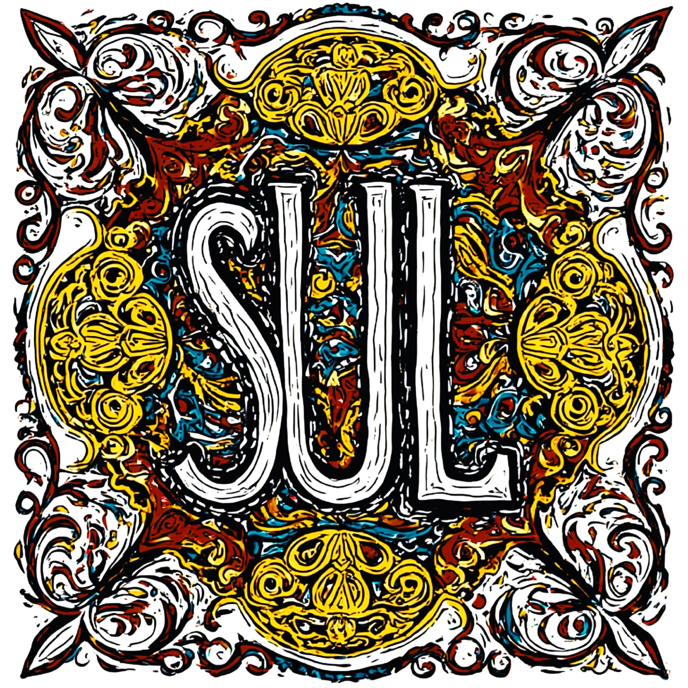

miejsce narodzin
żywej sztuki
żywej sztuki
Studio SUL to moja wytwórnia muzyki oraz strefa
wyładowania ekspresji dźwiękowej.
W tej chwili Studio SUL jest w fazie przebudowy.
Powyżej znajdziesz przycisk do listy projektów,
które powstały oraz będą powstawały w Studio SUL,
ich historie, pierwsze wersje okładek i rozpiski utworów.